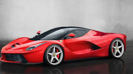

56
ჩვენს შესახებ
ავტოსალონი "ავტო მსოფლიო" გთავაზობთ ავტომობილების საუკეთესო არჩევანს, სანდოობასა და ხარისხს. ჩვენ ვამაყობთ ჩვენი მრავალწლიანი გამოცდილებით
მანქანები
Ferrari laferrari

Lamborghini Aventador

Porsche 911 GT3

McLaren P1

Bugatti Chiron

Ford Mustang Shelby GT500

სერვისები
- მანქანების შეძენა და გაყიდვა
- ლიზინგის და განვადების პირობები
- ტექნიკური მომსახურება